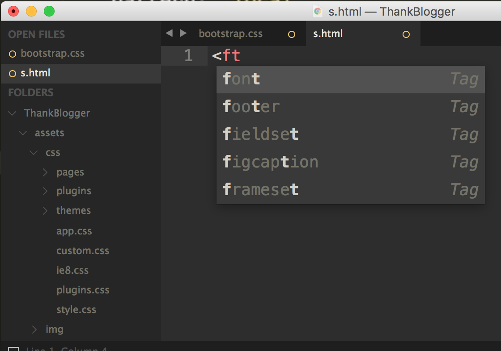
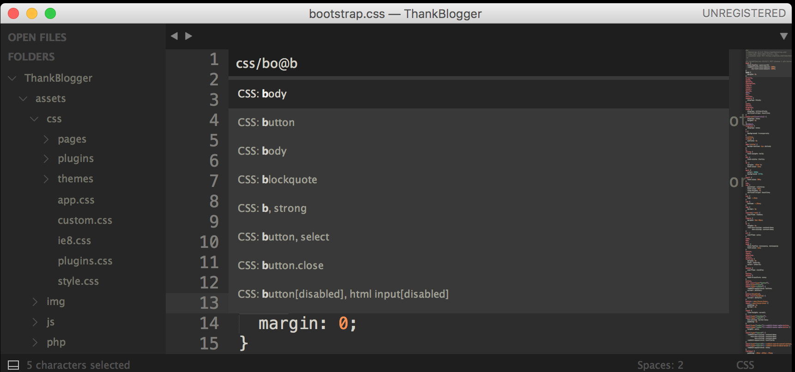
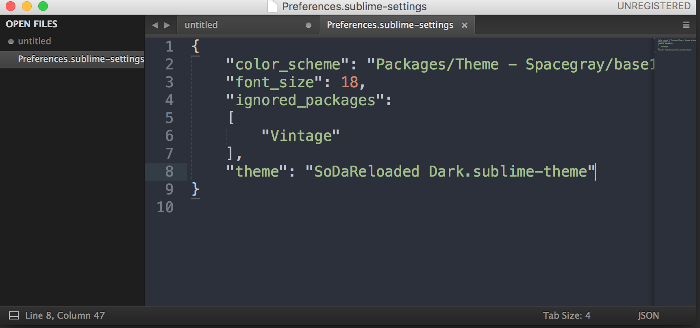

学会使用Sublime Text 3
##sublime使用方式介绍
###install安装
支持mac os和windows os
1、下载地址：http://www.sublimetext.com/3
2、下载完毕后，安装到本地
###File（文件）
1、打开文件：ctrl+o
2、新建文件：ctrl+n
3、打开上一次打开的文件：ctrl+shift+t
###edit（编辑）
1、注释/取消注释：ctrl+/（行注释），ctrl+shift+/（块注释）
2、在当前行下插入下一行：ctrl+enter
3、在当前行前插入一行：ctrl+shift+enter
4、编写代码时，sublime支持语法的自动模糊匹配

5、增加缩进：ctrl+}、减少缩进：ctrl+{
6、粘贴时总是不按照缩进进行粘贴，用此快捷键解决问题：ctrl+shift+v
###selection（选择）
1、选择当前行：ctrl+l
2、选择相同的单词，生成多行游标：ctrl+d，非常出彩的一个特性。按esc可以退出多行游标
3、生成多行游标时，如果当想跳过当前单词：ctrl+k+d
4、复制当前行：ctrl+shift+d
###find（查找）
1、查找：ctrl+f
2、替换：ctrl+h
###goto（定位）
查找任何文件或符号等，都用ctrl+p，非常出彩的一个特性
1、ctrl+p调出窗口后，输入文件名称，下方就会列出符合名称的文件名，支持模糊匹配。还可指定某个路径下的某个文件，如输入com/index.jsp，则会列出com文件夹下的index.jsp
2、定位行：调出ctrl+p后，输入:+行号，回车即可定位到该行
3、定位css函数：调出ctrl+p后，输入@后，自动会列出当前的选择器的名称。（如果为html文档，则用#代替@）
4、组合查找：通过以上的命令就可以组合查找想要找到的符号了，假如想找css文件夹下bootstrap.css文件内的名字为“line”的选择器，那么可以在ctrl+p的窗口中输入：css/bo@line

###命令模式
命令模式是sublime编辑器特有的一个模式，非常实用，用快捷键ctrl+shift+p可以启动命令模式
1、启动命令模式后，输入set syntax:(因为支持模糊匹配，所以可以直接输入ss:或者css、javascript等)来指定当前文件的语法模式
2、通过命令模式可以做很多事情，比如显示或隐藏编辑器右方的minimap，那么就直接在命令模式中输入minimap点击回车
###preference（偏好）
1、编辑器的默认风格：setting-default
2、可以在这里边重写当前编辑器的风格：setting-user
3、编辑器的快捷键默认设置：key bindings-default
4、自己设置快捷键：key bindings-user，我们不知道command怎么办？打开控制台（ctr+·），输入sublime.log_commands(True)回车，这时候你对编辑器的操作中，就会在控制台中打印出对应的command了。
##常用插件
sublime提供了非常方便的方式安装插件，即使用packagecontrol安装所有的插件，但我们首先需要按照packagecontrol，安装方式如下
1、在https://packagecontrol.io/installation里拷贝安装命令
2、用快捷键ctrl+`打开控制台，粘贴刚才拷贝的安装命令，按回车后等待安装完成，重启sublime
3、使用命令模式ctrl+shift+p，输入pc:install后回车
https://packagecontrol.io/网站上有很多插件的介绍，包括最流行的、最新的插件等等
###theme
1、使用命令模式ctrl+shift+p，输入pc:install后回车
2、输入”theme 主题名”按回车等待安装
3、安装完毕后会自动打开一个说明文件，找到说明文件中的配置信息，拷贝到preference的settings user文件中

###Emmet
1、使用命令模式ctrl+shift+p，输入pc:install后回车
2、输入emmet，可以看到不同类型的emmet，选择javascript和css的进行安装，回车后等待安装
举例：当新建html时，输入!，然后按ctrl+e，将会自动添加html页面的文档。
请参考这位朋友的博客，这里列出了很多的emmet语法
###snippet
1、使用ctrl+shift+p调出来命令模式后，输入pp:install调出来安装插件的命令窗口
2、输入javaScript node寻找插件，点击回车后即会自动安装插件。安装完毕后，在编写JavaScript代码时使用JavaScript的snippet功能将会使编写代码变得非常轻松，所有的javasnippet在网站
https://packagecontrol.io/packages/JavaScript%20%26%20NodeJS%20Snippets 上都能找到
3、安装jquery的snippet同2（在pp:install后输入的是jquery）
4、安装回调函数的snippet同2（在pp:install后输入的是insert callback），使用快捷键alt+c即会补全回调函数
###advancedNewfile
快速创建一个文件
1、使用命令模式ctrl+shift+p，输入pc:install后回车
2、输入advancednewfile，按回车安装插件
3、使用命令ctrl+alt+n，在输入框中输入路径和文件名，回车将创建新文件
###docblockr
编写代码时，需要添加一些注释，该插件提供了快速生成注释的方法
1、使用命令模式ctrl+shift+p，输入pc:install后回车
2、输入docblockr，按回车安装插件
3、输入/*回车后会自动补全
###sublimelinter
语法校验插件
1、使用ctrl+shift+p调出来命令模式后，输入pp:install调出来安装插件的命令窗口
2、输入sublimeLinter，按回车安装插件,该插件是一个总体的框架，如果需要安装某种语言的校验插件，还需要安装对应语言的插件
3、假如我们需要安装js的linter，那么首先通过npm命令安装jshint，在终端工具中输入npm install -g jshint
4、在sublime安装插件命令中输入sublimeLinter-jshint
5、新建.jshintrc文件，例如：键入{“eqeqeq”:true}来校验三等号
##开发案例，新建一个html文件
1、ctrl+n：新建文件
2、ctrl+shift+p：输入ss:html，指定为html格式
3、键入标签，使用快捷键Alt+.自动闭合标签（mac上的快捷键是option+command+.）
4、ctrl+p命令调出后，通过#找到body标签
5、键入ul>.item$*10,按ctrl+e后，则会生成ul标签，内嵌10个
6、选中
7、在ctrl+shift+p中键入snippte:function,回车后将会在页面上自动出现function的代码片段，这时候按tab键可以更改函数变量
Comments